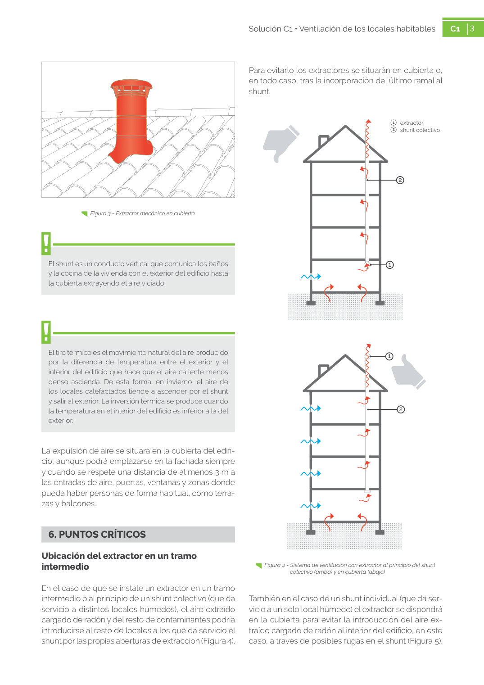

<!doctype html>
<html lang="es"><head><meta charset="utf-8">
<meta name="viewport" content="width=device-width, initial-scale=1">
<title>GUIA · 1   extractor 2   shunt colectivo</title><link rel="stylesheet" href="../estilo.css">
</head><body>
<nav><a href="../index.html">Índice</a> › <a href="../doc/guia-pdf-58ad6aa65696-sin-fecha-8e711eace63c.html">GUIA</a> › 1</nav>

<header class="meta">
<p><a href="../doc/guia-pdf-58ad6aa65696-sin-fecha-8e711eace63c.html">GUIA</a> · 1   extractor 2   shunt colectivo · versión sin-fecha · capa guia</p>
</header>
<div class="cita"><strong>Cita:</strong> GUIA · 1 · 1   extractor 2   shunt colectivo · páginas físicas pág. 3-4 (impresas: ['3', '4'])</div>
<p>Formatos: <a href="../../contenido/docs/GUIA-PDF-58ad6aa65696/sin-fecha__8e711eace63c/apartado/a0014__1-extractor-2-shunt-colectivo.json">JSON compacto</a> · <a href="../../contenido/docs/GUIA-PDF-58ad6aa65696/sin-fecha__8e711eace63c/apartado/a0014__1-extractor-2-shunt-colectivo.md">Markdown</a> · <a href="../../contenido/docs/GUIA-PDF-58ad6aa65696/sin-fecha__8e711eace63c/fuente.pdf">PDF fuente</a></p>
<p><a href="../doc/guia-pdf-58ad6aa65696-sin-fecha-8e711eace63c.html">Ámbito del documento</a> · <a href="../doc/guia-pdf-58ad6aa65696-sin-fecha-8e711eace63c.html#ambito">texto del ámbito</a> ·
<a href="../doc/guia-pdf-58ad6aa65696-sin-fecha-8e711eace63c.html">documento y tablas</a></p>
<nav><a href="guia-pdf-58ad6aa65696-sin-fecha-8e711eace63c__a0013.html">← intermedio</a> <a href="guia-pdf-58ad6aa65696-sin-fecha-8e711eace63c__a0015.html">1   extractor 2    shunt →</a></nav>
<h1>1 1   extractor 2   shunt colectivo</h1>
<p>Tipo: tablas, figuras · nivel 1 · sección estimada: 1   extractor 2   shunt colectivo · padre: </p>
<pre class="literal">1   extractor 2   shunt colectivo
2   shunt colectivo
2
1
1
2
También en el caso de un shunt individual (que da ser­
vicio a un solo local húmedo) el extractor se dispondrá
en la cubierta para evitar la introducción del aire ex­
traído cargado de radón al interior del edificio, en este
caso, a través de posibles fugas en el shunt (Figura 5).

4
Solución C1 • Ventilación de los locales habitables
C1
4
Figura 5 - Sistema de ventilación con extractor al principio del shunt
individual (arriba) y en cubierta (abajo)</pre>
<h2>Tablas en estas páginas</h2><ul><li>p. 3 · <a href="../../contenido/docs/GUIA-PDF-58ad6aa65696/sin-fecha__8e711eace63c/tabla/p0003_t01.json">p0003_t01.json</a> · <a href="../../contenido/docs/GUIA-PDF-58ad6aa65696/sin-fecha__8e711eace63c/tabla/p0003_t01.csv">.csv</a></li><li>p. 4 · <a href="../../contenido/docs/GUIA-PDF-58ad6aa65696/sin-fecha__8e711eace63c/tabla/p0004_t01.json">p0004_t01.json</a> · <a href="../../contenido/docs/GUIA-PDF-58ad6aa65696/sin-fecha__8e711eace63c/tabla/p0004_t01.csv">.csv</a></li></ul><h2>Página visual</h2><figure><a href="../../contenido/docs/GUIA-PDF-58ad6aa65696/sin-fecha__8e711eace63c/figura/p0003.png"></a><figcaption>Página visual 3 (fuente para fórmulas/tablas/figuras)</figcaption></figure><figure><a href="../../contenido/docs/GUIA-PDF-58ad6aa65696/sin-fecha__8e711eace63c/figura/p0004.png"></a><figcaption>Página visual 4 (fuente para fórmulas/tablas/figuras)</figcaption></figure><p class="aviso">PDF fuente redistribuible: copia fiel enlazada en esta página (SHA256 verificado).</p>
<footer>Generado estáticamente desde JSON normalizado; sin JavaScript ni servicios externos.
El JSON es la fuente; este HTML es caché reproducible.</footer>
</body></html>
